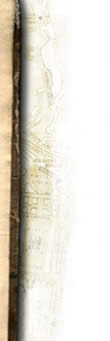

|

|
 |
|
| La
straordinaria cupola, disegnata da Alessi, racchiude il Sacro
Catino, una coppa esagonale di colore smeraldo che la
leggenda associa al Santo Graal. La cappella di S. Giovanni Battista, all’interno della quale sono conservate le ossa di San Lorenzo, è riccamente decorata di statue raffiguranti Adamo ed Eva e realizzate da Matteo Civitali e Andrea Sansovino. |